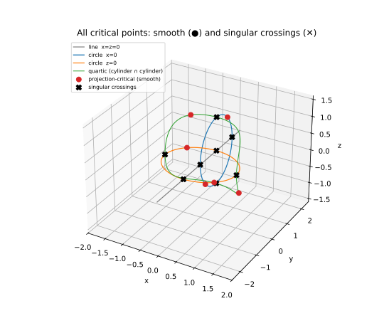
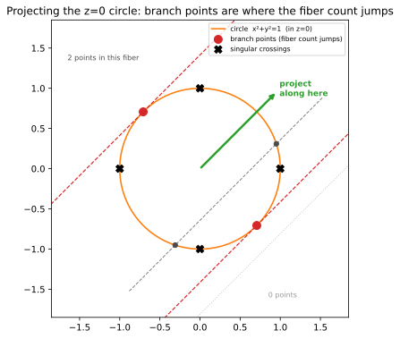

🎯 Critical points by rank deficiency (a null vector, not a determinant)¶
The critical points of a curve \(f=0\) with respect to a linear projection \(\pi\) are the points where \(\pi\) restricted to the curve has vanishing differential – where \(\pi\)’s gradient is orthogonal to the curve’s tangent. They are the building block of much of numerical algebraic geometry (the branch points of a projection, the witness points of a curve, the start of a numerical irreducible decomposition).
The naive way to write “the tangent is \(\pi\)-critical” is a determinant of the Jacobian – but for a curve in \(n\) variables that determinant has high degree, and degree is path count. A degree-smart formulation says the same thing without the determinant: the Jacobian of \(f\) stacked with \(\pi\)’s coefficient row is rank-deficient, i.e. it has a nonzero null vector.
The rank-deficiency system¶
For a space curve cut by \(f_1, f_2\) in variables \(x,y,z\), the \(2\times3\) Jacobian \(J_f\) has rank 2 where the curve is smooth, so its kernel is the (1-dimensional) tangent line. A linear projection \(\pi(x)=\pi_0 x+\pi_1 y+\pi_2 z\) is critical exactly when its gradient row \(\pi=(\pi_0,\pi_1,\pi_2)\) lies in the row space of \(J_f\) – equivalently, the stacked matrix
is rank-deficient: there is a nonzero \(v\) with \(M v = 0\). We introduce that null vector as fresh unknowns \(v=(v_0,v_1,v_2)\) and add one patch equation \(h\cdot v = 1\) so \(v\neq 0\). Counting: \(f_1=f_2=0\) (2 equations), \(Mv=0\) (3), the patch (1) – six equations in the six unknowns \(x,y,z,v_0,v_1,v_2\). The null vector \(v\) that comes out is the curve’s tangent direction at a smooth critical point. Degree stays low (the determinant is never formed); the cost is three extra variables.
The curve (which is more than it looks)¶
Each equation is one surface, and their intersection is a reducible space curve. \(f=0\) is the plane \(x=0\) together with the cylinder \(x^2+y^2=1\); \(g=0\) is the plane \(z=0\) together with the cylinder \((y-1)^2+z^2=1\). Multiplying out the four plane/cylinder pairs, the curve is (by Bézout, total degree \(3\cdot 3 = 9\)):
a line, the \(y\)-axis \(\{x=0,\ z=0\}\) (degree 1),
two interlocking circles – \(\{x=0,\ (y-1)^2+z^2=1\}\) in the \(yz\)-plane and \(\{z=0,\ x^2+y^2=1\}\) in the \(xy\)-plane (degree 2 each),
a quartic where the two cylinders meet, \(\{x^2+y^2=1,\ (y-1)^2+z^2=1\}\) (degree 4).
\(1+2+2+4=9\). We are not decomposing the curve here (that is numerical irreducible decomposition, a different algorithm) – we just want its critical points. But the reducibility matters: the components cross each other, and those crossings are singular points of the curve, which the criticality system will pick up alongside the honest projection-critical points.
Building and solving it¶
The whole criticality statement is three lines: differentiate the curve into a Jacobian, stack the
random projection’s coefficient row on top, and dot the result with a null vector. bertini
differentiates symbolically (bertini.jacobian()), bertini.random_matrix() draws the
random projection (a projection is just a linear functional, so its gradient row is a random
coefficient row), and bertini expresses the linear algebra:
import numpy as np
import bertini
bertini.random.set_random_seed(165)
x, y, z = bertini.Variable('x'), bertini.Variable('y'), bertini.Variable('z')
f = x * (x**2 + y**2 - 1)
g = z * ((y - 1)**2 + z**2 - 1)
pi = bertini.random_matrix(1, 3, real=True, orthonormal=False) # a random real projection row
J = bertini.jacobian([f, g], [x, y, z]) # 2 x 3 symbolic Jacobian of the curve
M = np.vstack([J, bertini.coefficients(pi)]) # 3 x 3: J_f stacked over the projection
v = np.array(bertini.variables('v', 3), dtype=object) # the null-vector unknowns
sys = bertini.System()
sys.add(bertini.VariableGroup([x, y, z, *v]), f, g) # curve equations
sys.add_functions(M @ v) # M v = 0 (rank deficiency)
sys.add_function((bertini.random_matrix(1, 3, symbolic=True) @ v)[0] - 1) # de-zero patch h.v = 1
solver = bertini.ZeroDimSolver(sys, endgame='cauchy', mptype='adaptive', startsystem='binomial')
solver.solve()
finite = []
for s in solver.solutions():
p = np.array(s)
xyz = (complex(p[0]), complex(p[1]), complex(p[2]))
if all(abs(w) < 1e6 for w in xyz):
finite.append(xyz)
Knowing we are right¶
Each circle is a genus-0 degree-2 curve, so it has a predictable pair of critical points for any generic projection. On \(\{x=0,\ (y-1)^2+z^2=1\}\) the projection restricts to \(\pi_1 y+\pi_2 z\), extremized at \((0,\ 1\pm \pi_1/r,\ \pm \pi_2/r)\) with \(r=\sqrt{\pi_1^2+\pi_2^2}\); on \(\{z=0,\ x^2+y^2=1\}\) it restricts to \(\pi_0 x+\pi_1 y\), extremized at \((\pm \pi_0/s,\ \pm \pi_1/s,\ 0)\) with \(s=\sqrt{\pi_0^2+\pi_1^2}\). These four are only a subset of the critical points, but they are ones we can write down, so they are our check – all four turn up among the solutions:
a, b, c = (complex(e).real for e in pi.ravel())
r, s = np.hypot(b, c), np.hypot(a, b)
predicted = [(0, 1 + b/r, c/r), (0, 1 - b/r, -c/r), (a/s, b/s, 0), (-a/s, -b/s, 0)]
def recovered(q):
return any(max(abs(w.real - t) + abs(w.imag) for w, t in zip(sol, q)) < 1e-5 for sol in finite)
assert all(recovered(q) for q in predicted) # the two critical points on each circle
Two kinds of critical point¶
The solve returns more than those four, and honesty demands we show them all. The real critical points come in two flavours:
smooth projection-critical points – on a single component where the curve is smooth, the genuine “the projection stops moving” points (two on each circle, and some on the quartic);
singular crossings – where two components meet (line-meets-circle, circle-meets-quartic), the curve is not smooth, so \(J_f\) is already rank-deficient there and the point satisfies the system automatically.
We label each real solution by how many of the four components pass through it, and plot the whole curve so nothing is hidden:
import matplotlib.pyplot as plt
reals = [np.array([w.real for w in p]) for p in finite if all(abs(w.imag) < 1e-7 for w in p)]
uniq = []
for p in reals:
if not any(np.linalg.norm(p - q) < 1e-4 for q in uniq):
uniq.append(p)
def n_components(p): # how many components pass through p
X, Y, Z = p; e = 1e-5
return sum([abs(X) < e and abs(Z) < e, # line x=z=0
abs(X) < e and abs((Y - 1)**2 + Z**2 - 1) < e, # circle x=0
abs(Z) < e and abs(X**2 + Y**2 - 1) < e, # circle z=0
abs(X**2 + Y**2 - 1) < e and abs((Y - 1)**2 + Z**2 - 1) < e])# quartic
smooth = np.array([p for p in uniq if n_components(p) == 1])
singular = np.array([p for p in uniq if n_components(p) >= 2])
t = np.linspace(0, 2*np.pi, 400); tt = np.linspace(0, np.pi, 300)
fig = plt.figure(figsize=(7.5, 6.5)); ax = fig.add_subplot(projection='3d')
ax.plot([0, 0], [-2.5, 2.5], [0, 0], color='0.5', lw=1.2, label='line x=z=0')
ax.plot(np.zeros_like(t), 1 + np.cos(t), np.sin(t), 'C0', lw=1.2, label='circle x=0')
ax.plot(np.cos(t), np.sin(t), np.zeros_like(t), 'C1', lw=1.2, label='circle z=0')
for sgn in (1, -1): # quartic: two z-branches
ax.plot(np.cos(tt), np.sin(tt), sgn*np.sqrt(np.clip(np.sin(tt)*(2 - np.sin(tt)), 0, None)),
'C2', lw=1.0, label='quartic (cylinder ∩ cylinder)' if sgn == 1 else None)
ax.scatter(smooth[:, 0], smooth[:, 1], smooth[:, 2], c='C3', s=48, depthshade=False,
label='projection-critical (smooth)')
ax.scatter(singular[:, 0], singular[:, 1], singular[:, 2], marker='X', c='k', s=55,
depthshade=False, label='singular crossings')
ax.set_xlabel('x'); ax.set_ylabel('y'); ax.set_zlabel('z')
ax.set_xlim(-2, 2); ax.set_ylim(-2.5, 2.5); ax.set_zlim(-1.6, 1.6)
ax.legend(loc='upper left', fontsize=7.5)
ax.set_title('All critical points: smooth (●) and singular crossings (✕)')
plt.show()
{kind=link}

The full reducible curve – the \(y\)-axis line, the two interlocking circles, and the quartic where the cylinders meet – with every real critical point: the smooth projection-critical points (●) and the singular crossings (✕) where components meet.¶
What a smooth critical point is: where the fiber count jumps¶
For the smooth points there is an illuminating reading. A projection reads off the coordinate \(\pi\cdot x\); its fibers are the level sets, and you project along them (the projection direction is parallel to the fibers, perpendicular to the gradient \(\pi\), which points along the image axis). Sweep the projection value and count how many points of a component sit in the fiber. For the \(z=0\) circle a generic fiber meets it in two points; push to an extreme and those two collide into one (the fiber goes tangent); push past and there are none. The values where the count changes – \(2\to 1\to 0\) – are exactly the smooth critical points. They are the branch points of the projection:
{kind=link}

The \(z=0\) circle, projected along the green direction (fibers = the parallel dashed lines). A generic fiber (grey) meets it in two points; the two critical fibers (red, tangent) meet it in one – the two collide – and a fiber past them (dotted) meets it in none. The two red branch points are where the fiber count jumps; the black ✕ mark where the line and the quartic cross this circle (singular points of the whole curve, not branch points of the circle).¶
The recipe needs nothing special of the curve: differentiate your \(f\) into a Jacobian, stack a random projection row, dot with a null vector, patch it, and solve. What comes back is every critical point – and, on the smooth pieces, every branch point of the projection.
Complete example¶
The full runnable script – assemble nothing, just run it:
"""Critical points of a space curve via the rank-deficient (nullvector) Jacobian.
The critical points of a curve ``f = 0`` with respect to a linear projection ``pi`` are the points
where ``pi``'s differential vanishes on the curve's tangent. Rather than a high-degree determinant,
state it as a *rank deficiency*: the Jacobian of ``f`` stacked with ``pi``'s coefficient row is a
3x3 matrix ``M = [ J_f ; pi ]`` with a nonzero null vector ``v``. Solve for the point ``(x,y,z)``
on the curve together with that null vector, plus one patch equation so ``v != 0``.
The curve here is two interlocking circles (a reducible space curve):
f = x (x^2 + y^2 - 1) # plane x=0 u cylinder x^2 + y^2 = 1
g = z ((y-1)^2 + z^2 - 1) # plane z=0 u cylinder (y-1)^2 + z^2 = 1
Run: python critical_points.py
"""
import numpy as np
import bertini as pb
from bertini import ZeroDimSolver
def main():
pb.random.set_random_seed(165)
x, y, z = pb.Variable('x'), pb.Variable('y'), pb.Variable('z')
f = x * (x**2 + y**2 - 1)
g = z * ((y - 1)**2 + z**2 - 1)
# a random real projection; its gradient row is just its (constant) coefficients
pi = pb.random_matrix(1, 3, real=True, orthonormal=False)
# --- the three lines that state criticality -------------------------------------------------
J = pb.jacobian([f, g], [x, y, z]) # 2 x 3 symbolic Jacobian of the curve
M = np.vstack([J, pb.coefficients(pi)]) # 3 x 3: J_f stacked over the projection
v = np.array(pb.variables('v', 3), dtype=object) # the null-vector unknowns v0, v1, v2
sys = pb.System()
sys.add(pb.VariableGroup([x, y, z, *v]), f, g) # curve equations
sys.add_functions(M @ v) # M v = 0 (rank deficiency)
sys.add_function((pb.random_matrix(1, 3, symbolic=True) @ v)[0] - 1) # de-zero patch h.v = 1
solver = ZeroDimSolver(sys, endgame='cauchy', mptype='adaptive', startsystem='binomial')
solver.solve()
# keep finite (x, y, z) parts
points = []
for s in solver.solutions():
p = np.array(s)
xyz = (complex(p[0]), complex(p[1]), complex(p[2]))
if all(abs(w) < 1e6 for w in xyz):
points.append(xyz)
reals = [tuple(round(w.real, 4) for w in p) for p in points if all(abs(w.imag) < 1e-8 for w in p)]
print(f"{len(points)} finite critical points; {len(reals)} of them real:")
for p in sorted(set(reals)):
print(" ", p)
if __name__ == '__main__':
main()